Запрос: GET /task2/files/ HTTP/1.0 с заголовком Host: u82609.kubsu-dev.ru
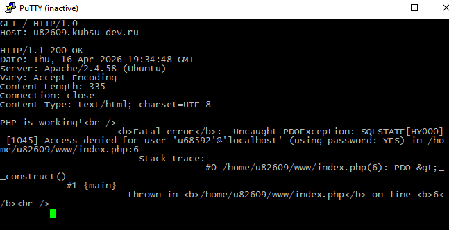
Запрос: GET /task2/files/internal.html HTTP/1.1
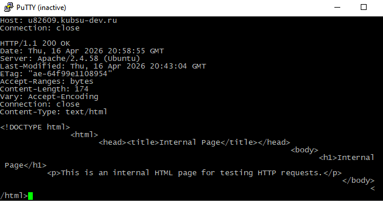
Запрос: HEAD /task2/files/file.tar.gz HTTP/1.1
Результат: Content-Length: 10240 байт (10 КБ)
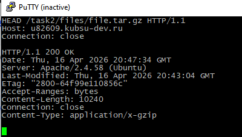
Запрос: HEAD /task2/files/image.png HTTP/1.1
Результат: Content-Type: image/png
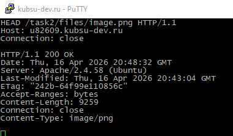
Запрос: POST с телом comment=HelloWorld
Результат: Сервер принял комментарий и вернул ответ Hello from index.php! POST received: Array ( ['comment'] => HelloWorld )
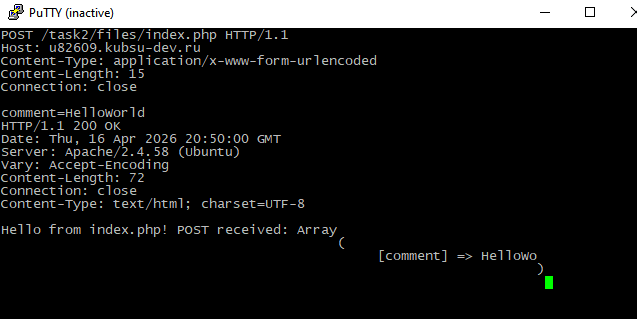
Запрос: GET /task2/files/file.tar.gz HTTP/1.1 с заголовком Range: bytes=0-99
Результат: Content-Range: bytes 0-99/10240 и 100 байт данных
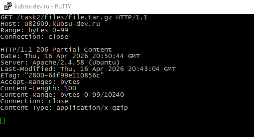
Запрос: GET /task2/files/index.php HTTP/1.1
Результат: Content-Type: text/html; charset=utf-8
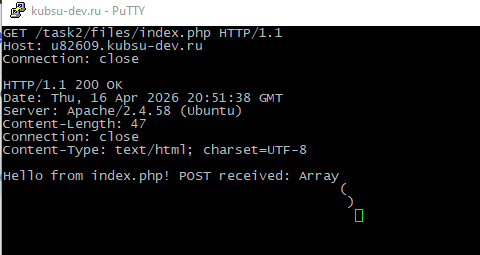
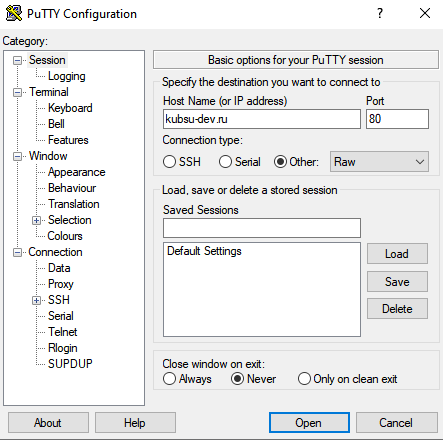
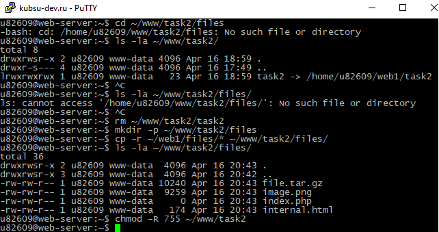
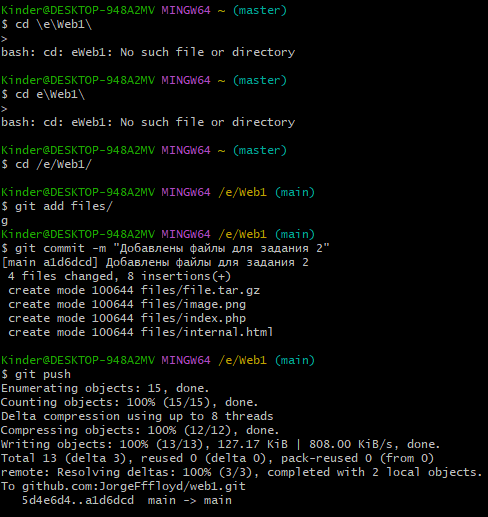
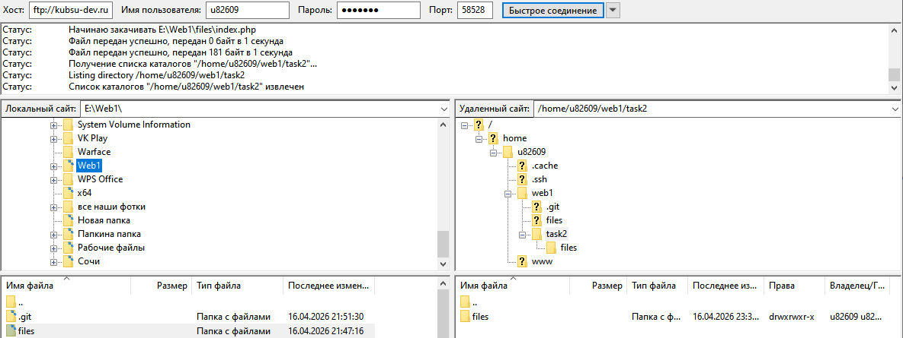
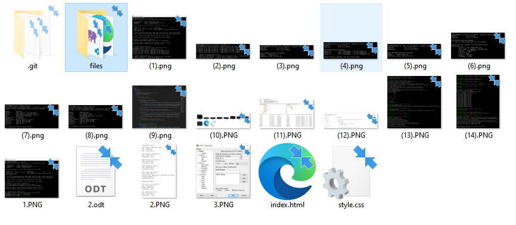
Все 7 HTTP-запросов выполнены успешно через PuTTY (Raw, порт 80)
Файлы задания 2 залиты в Git и на сервер в каталог /task2/files/
Страница доступна по адресу: http://u82609.kubsu-dev.ru/task2/
Репозиторий: github.com/JorgeFffloyd/web1